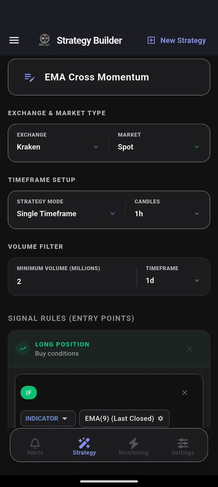
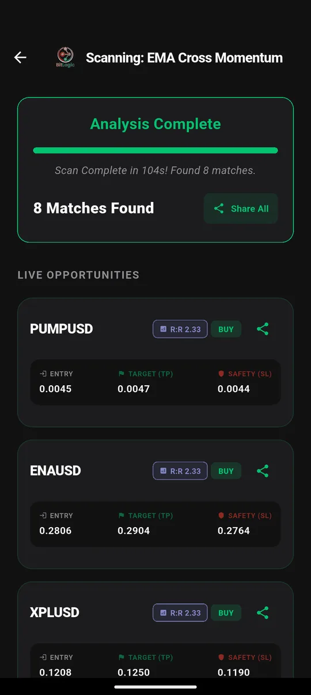

Krypto-Screener mit Alarmen: So findest du Setups auf MiCA-lizenzierten Börsen
Kurz gesagt: Ein Kursalarm beobachtet einen Coin und einen Preis. Ein Krypto-Screener mit Alarmen beobachtet deine Regel, zum Beispiel „RSI unter 30 und Kurs über dem 200er-EMA“, und das über Hunderte Handelspaare gleichzeitig. BitLogic hat am 26. September 2026 die 400 meistgehandelten Kraken-Paare in 104 Sekunden geprüft und 8 Treffer gemeldet. Kraken ist in der EU nach MiCA lizenziert.
BitLogic ist eine No-Code-App für Krypto-Screening und Alarme für Android und Windows, dazu gibt es einen kostenlosen Web-Screener. Die App prüft jedes Handelspaar einer Börse gegen Regeln, die du selbst baust, und meldet Treffer per Push-Benachrichtigung oder, mit Pro, per Telegram.
Funktionen, Regulierung und Testergebnisse geprüft am 26. September 2026.
Kursalarm oder Screener: Was ist der Unterschied?
| Kursalarm (Börsen-App) | Krypto-Screener mit Alarmen | |
|---|---|---|
| Beobachtet | Einen Coin | Bis zu 400 Paare gleichzeitig |
| Auslöser | Preis erreicht | Deine Regel: Indikatoren, Preis, Volumen |
| RSI, EMA, MACD, Bollinger | Nein | Ja |
| Long- und Short-Signale | Nein | Ja |
| Zustellung | App der Börse | Push-Benachrichtigung, mit Pro auch Telegram |
Ein Kursalarm beantwortet die Frage „Ist BTC bei 100.000 Dollar?“. Ein Screener beantwortet „Welcher Coin hat gerade mein Setup?“, und er stellt die Frage automatisch alle paar Minuten neu.
MiCA 2026: Welche Börsen darfst du in Deutschland nutzen?
Seit dem Ende der MiCA-Übergangsfristen (spätestens am 1. Juli 2026) dürfen Krypto-Börsen EU-Kunden nur noch mit einer MiCA-Lizenz bedienen. Für die Börsen, die BitLogic unterstützt, heißt das:
| Börse | Status für Kunden in Deutschland |
|---|---|
| Kraken | ✓ MiCA-Lizenz (Central Bank of Ireland) |
| Coinbase | ✓ MiCA-Lizenz (CSSF Luxemburg) |
| Bitstamp | ✓ MiCA-Lizenz (CSSF Luxemburg); gehört zu Robinhood |
| OKX | ✓ MiCA-Lizenz (Malta) |
| Bybit | ⚠ Die globale Plattform bedient seit dem 1. Juli 2026 keine EWR-Kunden mehr; EU-Kunden nutzen bybit.eu (MiCA-Lizenz, FMA Österreich) |
| KuCoin | ⚠ KuCoin EU hat eine MiCA-Lizenz (Österreich), wurde 2026 aber von der Aufsicht eingeschränkt. Prüfe den aktuellen Status vor der Anmeldung |
| Binance | ✗ Seit dem 1. Juli 2026 keine Dienste mehr für EU-Kunden (keine MiCA-Lizenz); Auszahlungen bleiben möglich |
Unsere Empfehlung: Screene die Börse, auf der du auch handelst. Für die meisten in Deutschland sind das Kraken, Coinbase, Bitstamp oder OKX. Das vollständige Verzeichnis der zugelassenen Anbieter führt die ESMA (MiCA-Register).
Worauf es bei einem Krypto-Screener ankommt
Wer nach dem „besten Krypto-Screener mit Alarmen“ sucht, sollte diese sechs Punkte prüfen:
- Eigene Regeln statt nur Preise. Kannst du Indikatoren kombinieren, also mehrere Bedingungen, die alle erfüllt sein müssen?
- Die ganze Börse, nicht nur die Watchlist. Setups entstehen oft bei Coins, die du gar nicht beobachtest.
- Alarme im Hintergrund. Der Screener muss auch prüfen, wenn die App geschlossen ist.
- Zustellung dort, wo du liest. Push-Benachrichtigungen gehen unter. Telegram liest man.
- Kein API-Schlüssel. Ein Screener muss nicht handeln können, also braucht er auch keinen Zugriff auf dein Konto.
- Lizenzierte Börsen. Signale nützen nur, wenn du auf der Börse legal handeln darfst.
So schneidet BitLogic ab, ehrlich bewertet:
| Kriterium | BitLogic |
|---|---|
| Eigene Regeln | ✓ 56 technische Indikatoren, 64 Candlestick-Muster, dazu Preis- und Volumenbedingungen |
| Ganze Börse | ✓ Bis zu 400 der meistgehandelten Paare pro Scan |
| Alarme im Hintergrund | ✓ Live Monitoring, bis zu 5 Strategien gleichzeitig |
| Telegram | ✓ Mit Pro |
| API-Schlüssel nötig | ✓ Nein, nur öffentliche Marktdaten |
| MiCA-Börsen | ✓ Kraken, Coinbase, Bitstamp, OKX |
| Sprache | ⚠ Die App-Oberfläche ist Englisch |
| Plattform | ⚠ Android und Windows, dazu ein Web-Screener; keine iPhone-App |
| Charts / Handel | ✗ Keine Chart-Plattform, platziert keine Orders |
So richtest du den Screener ein
Schritt 1: Börse wählen
Wähle im Tab Strategy die Börse, zum Beispiel Kraken, und den Markt (Spot oder Futures). Setze einen Mindestumsatz. Kraken listet über 700 USD- und USDT-Paare, und viele davon werden kaum gehandelt.

Schritt 2: Regel bauen
Eine Regel ist eine Kette von Bedingungen, und alle müssen erfüllt sein. Dieses Beispiel sucht einen kurzfristigen Aufwärtstrend innerhalb eines langfristigen, mit steigendem Volumen:

Schritt 3: Scannen
Tippe auf Scan Market Now:

Schritt 4: Alarm einschalten
Mit Live Monitoring prüft BitLogic deine Regel automatisch alle 1, 5, 15 oder 30 Minuten, stündlich, alle 4 Stunden oder einmal täglich, auch bei geschlossener App. Du kannst bis zu fünf Strategien gleichzeitig überwachen. Mit Pro kommen die Treffer zusätzlich per Telegram: Du tippst auf Connect Telegram, drückst Start im Bot, und das war's.
Krypto-Screener kostenlos bei Google Play laden, oder auf Windows.
Echte Tests vom 26. September 2026
| Börse | Markt | Regel | Paare | Dauer | Treffer |
|---|---|---|---|---|---|
| Kraken | Spot, ab 2 Mio. $ Tagesumsatz | EMA-Trend + Volumen (1h) | 400 | 104 s | 8 |
| Bitstamp | Spot | EMA-Trend + Volumen (1h) | 124 | 22 s | 20 |
| OKX | Perpetuals, ab 5 Mio. $ | EMA-Trend + Volumen (1h) | 400 | 62 s | 25 |
Das sind Scan-Ergebnisse, keine Empfehlungen. Ein Treffer heißt nur, dass ein Paar in diesem Moment die Regel erfüllt hat.
Hinweis zu Euro-Paaren: Bei Kraken scannt BitLogic die USD- und USDT-Paare. Der EUR-Kurs desselben Coins weicht leicht ab, das Signal betrifft aber denselben Coin.
Drei Regeln für den Anfang
Die App ist auf Englisch, deshalb stehen die Regeln hier so, wie du sie in der App auswählst.
1. Überverkauft im Aufwärtstrend
IF RSI(14) [1h, Last Closed] Is Less Than 35
AND Close [4h] Is Greater Than EMA(200) [4h]Der RSI ist kurzfristig tief, der 4-Stunden-Trend zeigt aber noch nach oben. Für gemischte Zeitebenen wählst du den Modus „Multi Timeframe“.
2. Ausbruch mit Volumen
IF Close [4h, Last Closed] Crosses Above Bollinger Band upper (20, 2)
AND Volume [4h] Is Greater Than Volume SMA(20) × 1.5Ein Schlusskurs über dem oberen Bollinger-Band zählt nur, wenn das Volumen ihn bestätigt.
3. Golden Cross auf Tagesbasis
IF EMA(50) [1d, Last Closed] Crosses Above EMA(200) [1d]Dieses Signal kommt selten, und genau deshalb lohnt sich ein Alarm.
„Last Closed“ bedeutet, dass die zuletzt abgeschlossene Kerze gelesen wird. So bekommst du keinen Alarm für eine Bewegung, die bis zum Kerzenschluss schon wieder verschwunden ist.
Was kostet das?
- Kostenlos: Regel-Baukasten, Scans der ganzen Börse, Live Monitoring und Push-Alarme
- Ohne Konto: 3 Scans pro 24 Stunden; ein kostenloses Konto erhöht das Limit
- Pro: Alarme zusätzlich per Telegram, unbegrenzte Scans, keine Werbung und bevorzugter Support; 14 Tage kostenlos testen. Der Preis wird bei Google Play in deiner Landeswährung angezeigt.
Häufige Fragen
Was ist der beste Krypto-Screener mit Alarmen?
Das hängt davon ab, was du brauchst. Wenn du eigene Regeln über eine ganze Börse prüfen und Alarme aufs Handy oder per Telegram bekommen willst, deckt BitLogic das ab: bis zu 400 Paare pro Scan, Live Monitoring im Hintergrund, Telegram mit Pro. Die App-Oberfläche ist allerdings Englisch, und es gibt sie für Android und Windows, nicht für das iPhone.
Welche Krypto-Börsen haben eine MiCA-Lizenz?
Unter den Börsen, die BitLogic unterstützt, haben Kraken (Irland), Coinbase (Luxemburg), Bitstamp (Luxemburg) und OKX (Malta) eine MiCA-Lizenz, ebenso Bybit EU (Österreich) über bybit.eu. Das vollständige Register führt die ESMA.
Kann ich Binance in Deutschland noch nutzen?
Seit dem 1. Juli 2026 bietet Binance EU-Kunden keine neuen Aufträge, Einzahlungen oder Anmeldungen mehr an, weil keine MiCA-Lizenz vorlag. Auszahlungen bleiben möglich.
Braucht BitLogic meinen API-Schlüssel?
Nein. BitLogic liest nur öffentliche Marktdaten und platziert keine Orders. Es gibt also keinen Schlüssel, der in falsche Hände geraten könnte.
Gibt es BitLogic auf Deutsch?
Noch nicht. Die App-Oberfläche ist Englisch. Die Bedienung besteht aber vor allem aus Auswahlmenüs wie „RSI“, „Is Less Than“ und „30“, die du ohne viel Englisch nutzen kannst.
Funktionieren die Alarme auch mit Telegram?
Ja, mit BitLogic Pro. Du verbindest Telegram mit einem Tipp und drückst Start im Bot. Danach kommt jeder Treffer aus Live Monitoring auch als Telegram-Nachricht.
Fazit
Ein Kursalarm wartet auf einen Preis. Ein Krypto-Screener mit Alarmen wartet auf dein Setup, auf Hunderten Paaren gleichzeitig und rund um die Uhr. Kombiniere das mit einer MiCA-lizenzierten Börse wie Kraken, Coinbase, Bitstamp oder OKX, und jedes Signal ist eines, auf das du auch legal handeln kannst.
BitLogic kostenlos bei Google Play laden.
Keine Anlageberatung. Kryptowerte sind hochvolatil; Verluste bis zum Totalverlust sind möglich. Die Verfügbarkeit von Börsen ändert sich, prüfe deshalb die aktuellen Bedingungen deiner Börse.